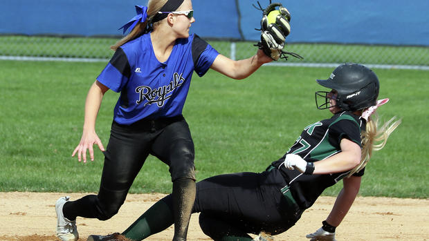

News
Sports
Life
Obituaries
Opinion
Preview: Woodbury softball returns
with firepower
First-year coach Michelle Welch inherits a loaded Woodbury High School team that is poised to make a run at conference, section and state titles. Welch takes over from longtime Royals coach Bob Samson, who retired after directing the Royals to a third-place finish at state last spring. Samson coached Woodbury for 30 years, including 17 as the head coach, bowing out with back-to-back section titles and state hardware. Just one senior starter graduated from last season's Woodbury squad, third baseman Lexi Jacobs. That means the Royals should be very good again. Just how good remains to be seen, but all the pieces are there for a banner season. "The girls have set their expectations very high for themselves," Welch said. "We had them fill out a goal sheet, and almost all of them wrote down conference champs, section champs,
state champs." Tempering those lofty expectations is one of the biggest parts of her new job."We're going to focus on team building and our mental toughness," Welch said. "But our skills are there." Preview: Woodbury baseball is back for more Woodbury went 13-6 during the regular season, but finished just 10-6 in the Suburban East Conference and was swept by rivals Park and East Ridge. The Royals turned it on during the postseason, outscoring the competition 17-0 in four section games. Woodbury went 2-1 in the state tournament, finishing with a 12-0 win against Hopkins in the third-place game.
Leading the Royals will be senior ace Ashley Mickschl, who was named Minnesota Fastpitch Coaches Association second team all-state last spring. Senior lefthander Ally Hoyt will team up with Mickschl to give the Royals two talented pitchers. "Ally has phenomenal rotation on her ball," Welch said. "And then we have Ashley, and she has just crazy speed. So between the two of them, we have a set pair." But the Royals are strong in more areas than just pitching. There are stars everywhere you look, including top hitters Kaitlyn Rocco, Meagan Bliese and Amanda Dickmeyer. Catcher Grace Beseman was named to the state all-tournament team last season as a sophomore.
Defensively, the Royals will be stout up the middle with Beseman and an infield lineup led by Dickmeyer at shortstop and Cam Veenbaas at second. Welch emphasized, however, that all positions are still up for grabs as the Royals work through the preseason. She can't deny the Royals have a wealth of talent. It's simply a matter of determining the best possible lineup. "I feel like we're solid," Welch said. "Sometimes I'm at practice, and I'm just blown away by their, even just their speed, how quickly they do things. It's just awesome to watch."
Woodbury romped to a third-place finish at state last season and with players such as Cam Veenbaas, left, and Amanda Dickmeyer, the fun for the Royals should continue this spring. (Photo by John Molene)
Woodbury's Amanda Dickmeyer makes the force out at second in as Park's Heather Degler slides into second base. Photo by John Molene


© Woodbury Bulletin and Forum Communications Company
8420 City Centre Drive Woodbury, Minnesota 55125 Call us at 651-319-4270